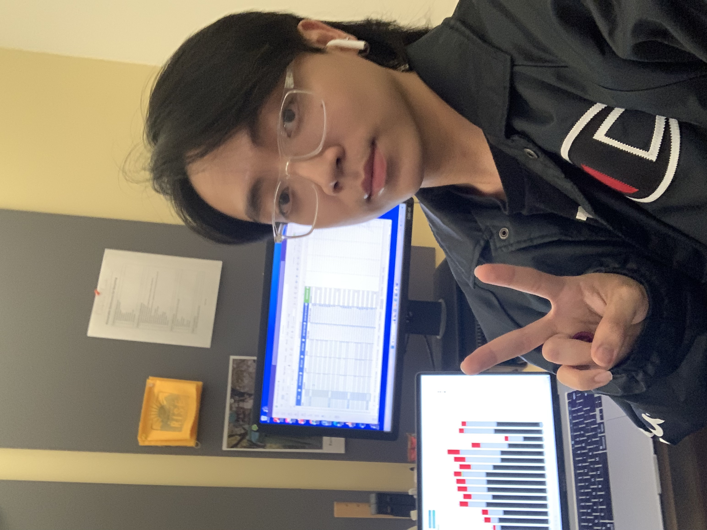
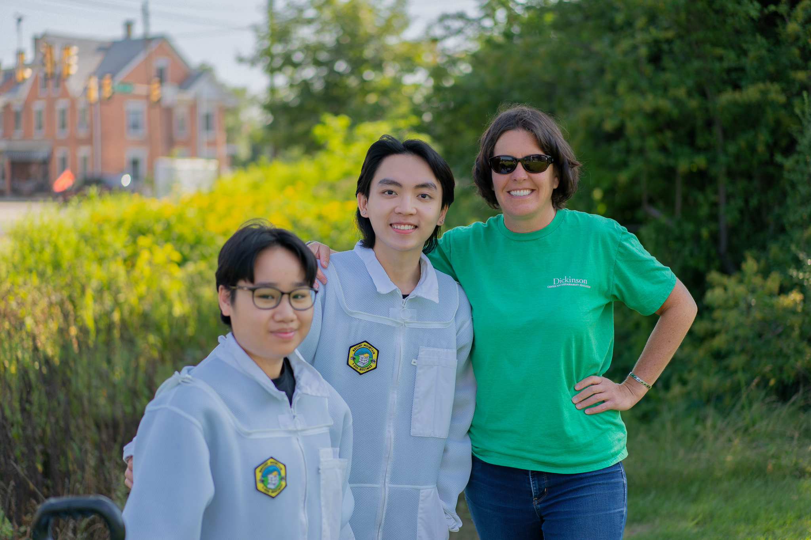
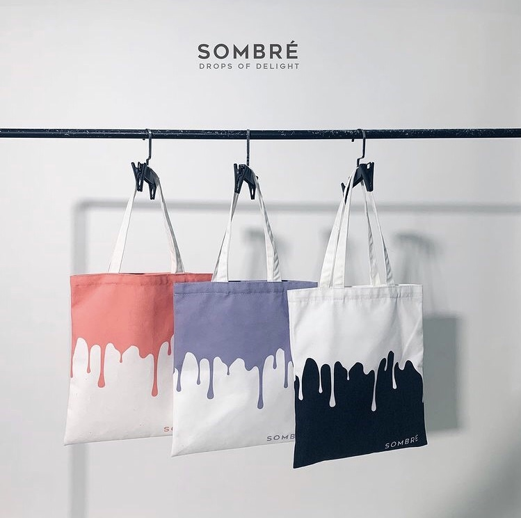

Data Analyst Intern
As of Fall 2023, I work as a part-time Data Analyst at Dickinson's Center for Sustainability Education, where I utilise technical skills to solve the college's sustainability problems.

As of Fall 2023, I work as a part-time Data Analyst at Dickinson's Center for Sustainability Education, where I utilise technical skills to solve the college's sustainability problems.

In summer 2023, I had the priviledge of working as a sustainability project management intern at the at Dickinson's Center for Sustainability Education.

Here are some technical projects I have worked on. More are coming!
Tech: SQL
For his project, I utilized an extensive combination of SQL queries and table joins to analyze and determine the optimal time period during which video games achieved their highest sales performance.
Tech: R
For this course project, I conducted an in-depth analysis of Spotify's Top 100 Songs (2010-2019), employing visualizations, variable analysis, model summaries, and KNN predictions in R to uncover significant correlations between song characteristics and their popularity.
Tech: Python, HTML
For this course project, I developed a data mining tool, using Python and knowledge of HTML tags to efficiently extract 100 pages of user reviews from BestBuy product listings, facilitating a comprehensive analysis of customer feedback based on the volume of stars given
Tech: Java
For this project, I implemented a Java-based program to simulate a booking program, which accepts user to input to display available appointments.
Tech: Tableau
For this project, I designed a responsive Tableau dashboard to analyze two years' worth of stationery product sales across various categories. Implemented features to identify and assess top-performing and lowest-performing sales representatives.
Tech: HTML, CSS, JavaScript, Vue.js
For this project, I designed a responsive Tableau dashboard to analyze two years' worth of stationery product sales across various categories. Implemented features to identify and assess top-performing and lowest-performing sales representatives.
For this project, I designed a responsive Tableau dashboard to analyze two years' worth of stationery product sales across various categories. Implemented features to identify and assess top-performing and lowest-performing sales representatives.
For this project, I designed a responsive Tableau dashboard to analyze two years' worth of stationery product sales across various categories. Implemented features to identify and assess top-performing and lowest-performing sales representatives.
I am currently in my third year pursuing Computer Science and Data Analytics at Dickinson College. My interests revolve around Data Science/Engineering, Software Development and Product Management.